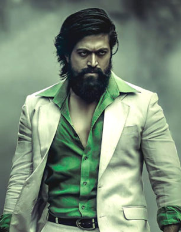

KGF Chapter 2

Vijendra Ingalgi, Son of Anand Ingalgi continues the story of KGF and Rocky in Chapter 2. Rocky survives the attack by Vanaram’s guards after killing Garuda. He is a hero and a saviour to the people of Narachi. While trying to fulfil his promise to his mother, he must face many obstacles in the form of Adheera, Inayat Khalil and Ramika sen.